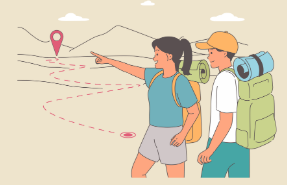

Ready for some adventure and a bit of surprise?
Login to start geocaching!
New to Geocaching?
Fun Finds is an Indianapolis based geocaching, loved by explorers of all ages! There are surprises hidden in parks, cities, and forests with coordinates provided. Depending on the difficulty, it may be easy to find or you may have to solve a puzzle to get to it. Once you've got it, you'll be able to sign a log book. Make sure to bring a trinket with you to replace for the next geocacher to keep the fun going!
